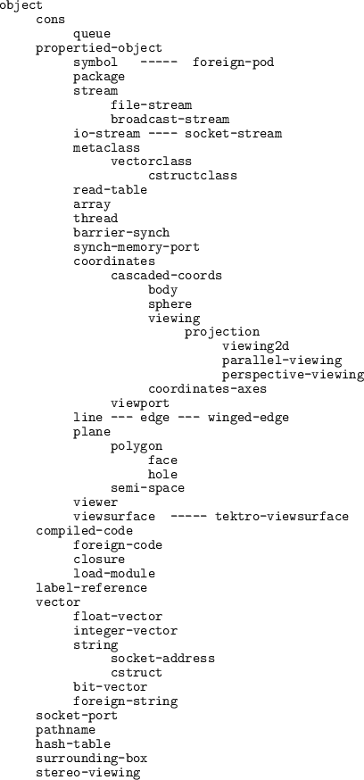

Subsections
メモリ管理の設計は、オブジェクト指向言語の柔軟性と効率性にたいへん
影響を及ぼす。
Euslispは、フィボナッチバディ法を基本に統一した方法で
オブジェクトをメモリに割り当てる。
この方法は、chunkと呼ばれる大きなメモリのプールを小さなセルに分割する。
それぞれのセルは、サイズが等しくなく、フィボナッチ数がそれぞれ割り当てられる。
chunkメモリは、symbol, cons, string, float-vectorなどのような
様々な型のオブジェクトのための同次なデータ容器である。
それらのサイズはchunkと一致する長さである。
chunkは、固定、動的、再配置可能、交替可能などのような
どんな特別な属性も持っていない。
EusLispのヒープメモリは、chunkの集合である。そして、
ヒープはUNIXより新しいchunkを得ることにより動的に拡張することができる。
拡張は、動作中に自動的に発生するかあるいはユーザーがsystem:alloc関数を
呼び出すことにより発生する。
自動的に処理されるとき、使用可能なメモリサイズは合計のヒープサイズの
約25%に保つ。この比率は、sys:*gc-margin*パラメータに0.1から0.9までの値を設定
することにより変更することができる。
すべてのヒープメモリを使いきったとき、mark-and-sweep型のガーベージコレクション(GC)
を始める。
ルート（パッケージ，クラスやスタック）からアクセス可能なセルは，
同じアドレスのままである。
他のアクセス不可能なセルは、矯正されfree-listsにリンクされる。
GCの間にコピーやコンパクト化は発生しない。
ガーベージされるセルが矯正されるとき、その隣接セルがfreeかどうかチェックされる。
そして、できるだけ大きなセルを構成するようにマージされる。
しかしながら、このマージは、ときどき意味の無いものになる。
なぜなら、もっとも頻繁に呼び出されるメモリアロケータであるconsが、
そのマージされたセルを最も小さなセルに分割することを要求するからである。
したがって、Euslispはconsの高速化のためにマージされないある特定の量の
ヒープを残すことを許可している。
この比率は、sys:*gc-merge*パラメータによって決定される。その値のデフォルトは
0.3である。
sys:*gc-merge*に大きな値を設定することにより、マージされないヒープを多く残す。
これは、consが要求されるとき、buddy-cellの分割が滅多に起こらないので、consの性能を改善する。
これは、また3次元ベクトルのような相対的に小さなセルのアロケーションについて
すべて成り立つ。
sys:gcは、明示的にガーベージコレクターを呼び出す。
そして、ヒープに配置された空いているワード数と全体のワード数（バイト数ではない）を示す2つの整数の
リストを返す。
もし、実行中に"fatal error: stack overflow"が報告され、
そのエラーが無限ループあるいは再帰処理によるものでないと確信するならば、
sys:newstackでLispのスタックの大きさを拡張すれば回避できる。
sys:newstackを設定する前には、resetを実行しなければならない。
なぜなら、
スペシャルバインドとunwind-protectの整理用の書式が
現在のスタックの中からすべて捨てられるためである。
新しいスタックが配置された後、オープニングメッセージを表示するところから
実行を始める。
デフォルトのスタックサイズは、16Kwordである。
Lispのスタックは、システムのスタックと別物である。
前者は、ヒープ上に配置され、後者は、オペレーティングシステムによって
スタックセグメント内に配置される。
もし、"segmentation fault"エラーが発生したならば、システムのスタックが小さいことに
より発生したことが考えられる。
cshのコマンドlimitで、システムのスタックサイズを増加することにより、
解決できる可能性がある。
sys:reclaimとsys:reclaim-tree関数は、オブジェクトにより占有されているセルを
メモリマネージャーに戻す。そのため、ガーベージコレクションを呼び出すことなしに
その後も再使用をすることができる。
しかし、それらのセルが他のセルから参照されていないことが確実でなければならない。
memory-reportとroom関数は、メモリの使用に関する統計を
セルのサイズやクラスによりソートして表示する。
addressは、オブジェクトのバイト換算したアドレスを返す。
このアドレスはプロセスに独自のものであるから、
この関数はハッシュテーブルが使用するハッシュ関数に有用である。
peekとpokeは、メモリから直接データを読み書きできる関数である。
アクセスする型は、:char, :byte, :short, :long, :integer, :float, :double
のどれかにすべきである。
例えば、(SYS:PEEK (+ 2 (SYS:ADDRESS '(a b))) :short)は、
consセルのクラスID（ふつう１である）を返す。
'list-all-'を名前の前に付けている幾つかの関数がある。
これらの関数は、システムのリソースあるいは環境のリストを返し、
動的なデバッグに有用である。
sys:gc [関数]
-
-
ガーベージコレクションを実行する。割り当てられている中で空いているワード数および全体のワード数
のリストを返す。
sys:gctime [関数]
-
-
3つの整数のリストを返す。1つは、ＧＣを呼び出した回数。
2つは、セルをマーキングするために使用した時間（1ユニットに1/60秒）。
3つが、矯正（マーキングを外し、マージする）のために使用した時間。
sys:alloc size [関数]
-
-
ヒープに少なくともsizeワードのメモリを配置し、
実際に配置されたワード数を返す。
sys:newstack size [関数]
-
-
現在のスタックを廃棄し、sizeワードの新しいスタックを配置する。
sys:*gc-merge* [変数]
-
-
メモリ管理用のパラメータ。
*gc-merge*は、GCによりマージされずに残すヒープメモリの比率を示す。
このマージされない領域は、すぐにconsのような小さなセルに満たされる。
デフォルトの値は、0.3である。
この値を0.4のように大きくすると、マージされない空きヒープが40%であることを
示し、consのためには役立つが、実数ベクトルやエッジや面などのような大きなセル
の確保には、害を及ぼす。
sys:*gc-margin* [変数]
-
-
メモリ管理用のパラメータ。
*gc-margin*は、全体のヒープに対する空きヒープの比率を決定する。
メモリは、UNIXから獲得したものであるため、空き空間はこの比率より
小さくならない。
デフォルトは、0.25であり、GCの際に25%以上の
空き空間が維持されることを意味する。
sys:reclaim object [関数]
-
-
ごみとしてobjectを廃棄する。
そのオブジェクトは、他のどのオブジェクトからも絶対に参照されないことが
保証されなければならない。
sys:reclaim-tree object [関数]
-
-
objectから通過できるsymbolを除いてすべてのオブジェクトを矯正する。
sys:btrace num [関数]
-
-
Lispのスタックのnum番目の深さの情報をトレースして表示する。
sys:memory-report &optional strm [関数]
-
-
セルのサイズでソートしたメモリ使用のテーブルをstrmストリームに出力する。
sys:room output-stream [関数]
-
-
クラスで整列したメモリ配置の情報を出力する。
sys:address object [関数]
-
-
プロセスのメモリ空間内にあるobjectのアドレスを返す。
sys:peek [vector] address type [関数]
-
-
addressで指定されたメモリ位置のデータを読みだし、
それを整数として返す。
typeは、:char, :byte, :short, :long, :float, :doubleの内の１つである。
もし、vectorが与えられなかったなら、
そのアドレスは、UNIXの処理空間として扱われる。
例えば、Sunにおいてa.outのヘッダーは#x2000に置かれるため、
(sys:peek #x2000 :short)はmagic number（ふつうは#o403)を返す。
Solaris2は、ELFヘッダーを#10000に置くため、
(sys:peek #x10000 :long)が"ELF"を表現する文字列である
#xff454c46を返す。
もし、vectorが与えられたならば、それはforeign-stringであり、
アドレスはvectorの起点からのオフセットとして認識される。
(sys:peek "123456" 2 :short)は、"34"を表現する
short wordを返す。(#x3334(13108)である)
アドレス位置については十分注意すること。
short, integer, long. float, double wordを奇数アドレスから読み出すと、
"bus error"になる。
sys:poke value [vector] address value-type [関数]
-
-
valueをaddressで指定された位置に書き込む。
プロセスのメモリ空間内のどこでも書き込むことができるため、
特に注意をしなければならない。
プロセスの空間の外へ書き込んだなら、
確実に"segmentation fault"が発生する。
short, integer, long. float, double wordを奇数アドレスに書き込んだ
場合、"bus error"が発生する。
sys:list-all-chunks [関数]
-
-
配置されたすべてのヒープのchunkをリストアップする。
他に有用な実行関数はない。
sys:object-size obj [関数]
-
-
objからアクセス可能なセルとワードの数を計算する。
objから参照可能なすべてのオブジェクトが探索される。
そして、3つの数のリストが返される。
1つ目は、セルの数。2つ目は、これらのオブジェクトに論理的に配置されたワード数（
すなわち、ユーザーからアクセスできるワード数）。
3つ目は、物理的に配置されたワード数。
これは、ヘッダーとメモリ管理のための特別なスロットを含む。
探索は、symbolで停止する。すなわち、property-listあるいはprint-name stringのような
symbolから参照されるオブジェクトは、カウントされない。
EusLispは、UNIXオペレーティングシステムのシステムコールとライブラリ関数とに
直接関連する関数を取りそろえている。
これらの関数の詳細については、UNIX system interface (2)を調べること。
*unix-package*に定義されているこれらの低レベル関数の使用は、
ときどき危険をはらむ。
できるだけ他のパッケージに定義されている高レベル関数を使用すること。
例えば、unix:socket, unix:bind, unix:connectなどの代わりに9.4節に
記述されているIPC機能を使用すること。
unix:ptimes [関数]
-
-
経過時間、システム時間、ユーザー時間、サブプロセスのシステム時間とサブプロセスのユーザー時間
の5つの要素を持つリストを返す。
この関数は旧いので、unix:getrusageの使用を推奨する。
unix:runtime [関数]
-
-
プロセスのシステムとユーザー時間の合計を返す。
単位は、1/60秒である。
unix:localtime [関数]
-
-
現在の時間と月日を整数ベクトルで返す。
要素は、秒、分、時、日、月（0から始まることに注意）、年（1900からの経過年数）、曜日（0が日曜日、6が土曜日）、年内の通し日数（0から始まる）、夏時間がセットされているか、サポートされている時間帯である。
ex.) unix:localtime => #(10 27 12 8 10 116 2 312 nil (``JST'' ``JST''))
unix:asctime tm_intvector [関数]
-
-
整数ベクトルで表現されるローカル時間を文字列表現に変換する。
(unix:asctime (unix:localtime))は、現在の実際の時間の文字列
表現を返す。
unix:getpid [関数]
-
-
このプロセスのプロセスID(16ビット整数)を返す。
unix:getppid [関数]
-
-
親プロセスのプロセスIDを返す。
unix:getpgrp [関数]
-
-
このプロセスのグループIDを返す。
unix:setpgrp integer [関数]
-
-
新しいプロセスのグループIDを設定する。
unix:getuid [関数]
-
- このプロセスのユーザーIDを返す。
unix:geteuid [関数]
-
-
このプロセスの使用可能なユーザーIDを返す。
unix:getgid [関数]
-
-
このプロセスのユーザーグループIDを返す。
unix:getegid [関数]
-
-
このプロセスの使用可能なユーザーグループIDを返す。
unix:setuid integer [関数]
-
-
このプロセスの使用可能なユーザーIDを設定する。
unix:setgid integer [関数]
-
-
このプロセスの使用可能なユーザーグループIDを設定する。
unix:fork [関数]
-
-
他のEuslispを作成する。サブプロセスに0が返され、
親プロセスにforkされたプロセスのpidが返される。
パイプで接続されたプロセスを作成するためには、11.3節に書かれている
system:piped-forkを使用すること。
unix:vfork [関数]
-
-
他のEuslispをforkし、その新しいEuslispのプロセスが終了するまで親プロセスの実行を
一時停止する。
unix:exec path [関数]
-
-
Euslispから他のプログラムへ実行を移す。
unix:wait [関数]
-
-
サブプロセスの中の１つのプロセスの終了を待つ。
unix:exit code [関数]
-
-
実行を終了し、codeを終了状態として返す。
ゼロは通常の終了を意味する。
unix:getpriority which who [関数]
-
-
このプロセスが持つ最大の優先順位を返す。
whichは、0(プロセス)、1(プロセスグループ)、2(ユーザー)のうちの
1つである。
unix:setpriority which who priority [関数]
-
-
whichとwhoで決定されるリソースの優先順位をpriorityに設定する。
whichは、0,1,2の内の1つである。
whoは、whichから相対的に解釈される
(ならプロセスを示し、ならプロセスグループを示し、
ならユーザーのIDを示す)。
whoがゼロのとき、現在のプロセス、プロセスグループ、ユーザーを示す。
Euslispプロセスに低い優先順位を指定することは、大きい値を設定することであり、
これはプロセスを不利にする。
(unix:setpriority 0 0 10)は、優先順位を10に設定する。
unix:getrusage who [関数]
-
-
whoプロセスについてのシステムリソースの使用情報のリストを返す。
要素は、以下のような順番になっている。
もっと多くの情報が、lisp:rusageより得られる。
float ru_utime (sec.) /* user time used */
float ru_stime (sec.) /* system time used */
int ru_maxrss; /* maximum resident set size */
int ru_ixrss; /* currently 0 */
int ru_idrss; /* integral resident set size */
int ru_isrss; /* currently 0 */
int ru_minflt; /* page faults without physical I/O */
int ru_majflt; /* page faults with physical I/O */
int ru_nswap; /* number of swaps */
int ru_inblock; /* block input operations */
int ru_oublock; /* block output operations */
int ru_msgsnd; /* messages sent */
int ru_msgrcv; /* messages received */
int ru_nsignals; /* signals received */
int ru_nvcsw; /* voluntary context switches */
int ru_nivcsw; /* involuntary context switches */
unix:system [command] [関数]
-
-
サブシェルでcommandを実行する。
commandは、Bourn-shellで認識されるものでなければならない。
unix:getenv env-var [関数]
-
-
env-varの環境変数の値を返す。
unix:putenv env [関数]
-
-
プロセスの環境変数リストにenvを追加する。
envは、"VARIABLE=value"のように変数と値の等価を表す文字列である。
unix:sleep time [関数]
-
-
time秒間このプロセスの実行を一時停止する。
unix:usleep time [関数]
-
-
timeマイクロ秒間このプロセスを一時停止する。
(uは、マイクロを表現する。)
usleepは、Solaris2あるいは他のSystem5系のシステムには実現されていない。
unix:uread stream [buffer] [size] [関数]
-
-
streamからsizeバイト読み込む。
streamは、ストリームオブジェクトあるいはファイルディスクリプタ(fd)を
表現する整数である。
もし、bufferが与えられるとき、入力はそこに蓄積される。
そうでないならば、入力はstreamのバッファに蓄積される。
したがって、もしstreamがfdなら、bufferは与えられなければならない。
unix:ureadは、新しい文字列バッファを配置しない。
unix:ureadは、実際に読み込まれたバイト数を返す。
unix:write stream string &optional size [関数]
-
-
streamにstringのsizeバイトを書き込む。
もし、sizeが省略されたならば、stringの全部の長さが出力される。
unix:fcntl stream command argument [関数]
-
-
unix:ioctl stream command buffer [関数]
-
-
unix:ioctl_ stream command1 command2 [関数]
-
-
unix:ioctl_R stream command1 command2 buffer [size] [関数]
-
-
unix:ioctl_W stream command1 command2 buffer [size] [関数]
-
-
unix:ioctl_WR stream command1 command2 buffer [size] [関数]
-
-
unix:close fd [関数]
-
-
fdで指定されるファイルをクローズする。
unix:dup fd [関数]
-
-
fdで指定されるファイルディスクリプタを２重化して返す。
unix:pipe [関数]
-
-
パイプを作成する。このパイプの入出力ストリームを返す。
unix:lseek stream position [whence 0] [関数]
-
-
streamのファイルポインタをwhenceからpositionの
位置に設定する。
unix:link path1 path2 [関数]
-
- hardリンクを作る。
unix:unlink path [関数]
-
-
pathで指定されたファイルのhardリンクを取り去る。
もし、ファイルに参照が残っていないなら、削除される。
unix:mknod path mode [関数]
-
-
ファイルシステムにinodeを作る。
pathは、pathnameオブジェクトでなく文字列でなければならない。
unix:mkdir path mode [関数]
-
-
ファイルシステムにディレクトリを作る。
pathは、pathnameオブジェクトでなく文字列でなければならない。
unix:access path mode [関数]
-
-
pathへのアクセス権利をチェックする。
unix:stat path [関数]
-
-
pathのinode情報を得て、以下に示す整数のリストを返す。
st_ctime ; file last status change time
st_mtime ; file last modify time
st_atime ; file last access time
st_size ; total size of file, in bytes
st_gid ; group ID of owne
st_uid ; user ID of owner
st_nlink ; number of hard links to the file
st_rdev ; the device identifier (special files only)
st_dev ; device file resides on
st_ino ; the file serial number
st_mode ; file mode
unix:chdir path [関数]
-
- 現在のディレクトリをpathに変更する。
unix:getwd [関数]
-
- 現在のディレクトリを返す。
unix:chmod path integer [関数]
-
-
pathのアクセスモード(permission)を変更する。
unix:chown path integer [関数]
-
-
pathファイルのオーナーを変更する。
unix:isatty (stream  fd) [関数]
-
-
もし、streamがTTY型のデバイス(シリアルポートあるいは仮想TTY)に接続されているなら
Tを返す。
unix:msgget key mode [関数]
-
-
keyによってアドレスされるメッセージキューを作成し、配置する。
unix:msgsnd qid buf [mtype [flag]] [関数]
-
-
unix:msgrcv qid buf [size [mtype [flag]]] [関数]
-
-
unix:socket domain type &optional proto [関数]
-
-
domainに定義されている名前を持ちtypeを抽象型とするソケットを作成する。
typeは、1 (SOCK_STREAM),
2 (SOCK_DGRAM), 3 (SOCK_RAW), 4 (SOCK_RDM), 5 (SOCK_SEQPACKET)の内の1つである。
unix:bind socket name [関数]
-
-
nameとsocketを関連付ける。
もし、ソケットがUNIX領域内で定義されているならば、nameは、UNIXのパス名でなければならない。
unix:connect socket addr [関数]
-
-
socketとaddrで指定される他のソケットを接続する。
unix:listen socket &optional backlog [関数]
-
-
socketから接続要求を受け始める。
backlogは、接続の確定を待つためのキューの長さを指定する。
unix:accept socket [関数]
-
-
socketから接続要求を受け、両方向にメッセージを交換できるファイルディスクリプタ
を返す。
unix:recvfrom socket &optional mesg from flag [関数]
-
-
socketからデータを書いたメッセージを受ける。
そのソケットは、unix:bindにより名前を割り当てられなければならない。
mesgは、入ってきたメッセージが蓄積されるための文字列である。
もし、mesgが与えられたならば、unix:recvfromは受け取ったバイト数を返す。
もし省略されたなら、メッセージを蓄積するための新しい文字列を作成し、
その文字列を返す。
unix:sendto socket addr mesg &optional len flag [関数]
-
-
addrによって指定される他のソケットへデータの書かれたメッセージを送る。
socketは、名前が割り当てられてないデータ書き込み型のソケットでなければならない。
mesgは、送るための文字列であり、lenは文字列の最初から
数えたメッセージの長さである。
もし、省略されたなら、すべての文字列を送る。
unix:getservbyname servicename [関数]
-
-
/etc/servicesあるいはNISデータベースに記録されているservicename
のサービス番号を返す。
unix:gethostbyname hostname [関数]
-
-
hostnameのipアドレスとアドレス型のリストを返す。
(一般にいつも AF_INET==2).
unix:syserrlist errno [関数]
-
-
errnoのエラーコードに対するエラー情報が記述された文字列を返す。
unix:signal signal func &optional option [関数]
-
-
signalに対してシグナルハンドラーfuncをインストールする。
BSD4.2システムにおいて、システムコール処理の間に捕まえたシグナルは、
システムコールのリトライに起因する。
これは、もしその処理がシステムコールの呼び出しを発行するならば、
シグナルを無視することを意味する。
もし、option=2が指定されたならば、シグナルはsystem-5の手法で
処理される。そのシグナルは、システムコールの失敗に起因する。
unix:kill pid signal [関数]
-
-
pidで名前付けされるプロセスにsignalを送る。
unix:pause [関数]
-
-
シグナルが到着するまでこのプロセスの実行を一時停止する。
unix:alarm time [関数]
-
-
time秒後にアラーム時計シグナル(SIGALRM 14)を送る。
time=0でunix:alarmを呼び出すと、アラーム時計をリセットする。
unix:ualarm time [関数]
-
-
timeがマイクロ秒単位であることを除いてunix:alarmと同じである。
ualarmは、Solaris2あるいはSystem5系のシステムに実現されていない。
unix:getitimer timer [関数]
-
-
timerは、0 (ITIMER_REAL), 1 (ITIMER_VIRTUAL),
2(ITIMER_PROF)の内の１つである。
秒単位の時間(timer)と間隔(interval)の2つの要素を持つリストを返す。
unix:setitimer timer value interval [関数]
-
-
timerにvalueとintervalを設定する。
timerは、0 (ITIMER_REAL), 1 (ITIMER_VIRTUAL),
2(ITIMER_PROF)の内の１つである。
ITIMER_REALは、valueが終了したとき、SIGALRMを発行する。
ITIMER_VIRTUALは、SIGVTALRMを発行し、
ITIMER_PROFは、SIGPROFを発行する。
unix:select inlist outlist exceptlist timeout [関数]
-
-
inlist, outlistとexceptlistは、ファイルディスクリプタ
を示すビットベクトルである。そのファイルディスクリプタの入出力イベント
は、テストされなければならない。
例えば、もしinlist=#b0110でoutlist=#b100で
exceptlist=NILであるなら、
fd=1あるいはfd=2で読み込み可能かあるいはfd=2で書き込み可能であるかどうかをテストする。
timeoutは、unix:selectが待つために許される秒数を指定する。
inlistで指定されているポートの1つに入力データが現れるかあるいは
outlistに指定されるポートの1つに書き込み可能となるかあるいは
exceptlistで指定されるポートの1つに例外条件が起こるとすぐに
unix:selectは、inlist, outlist, exceptlistのそれぞれにおいて
アクセス可能なポートとして設定されたポートの中で、入力処理可能なポート番号を返す。
unix:select-read-fd read-fdset timeout [関数]
-
-
入出力の選択は、ふつう入力処理のときのみ意味がある。
unix:select-read-fdは、
select fdset nil nil timeoutの速記法である。
read-fdsetは、ビットベクトルでなく、設定された読み込みfdを指定する整数である。
スレッド内でシグナルを生成することはできない。
したがって、1つのシグナルスタックと1つのタイマーがEuslispのプロセスの
中で実現されている。
Solaris2の上では、メインの最上位レベルが分割されたスレッド内で実行する。
unix:thr-self [関数]
-
-
現在実行されているスレッドのID(整数)を返す。
unix:thr-getprio id [関数]
-
-
idで指定されたスレッドの実行優先順位を返す。
unix:thr-setprio id newprio [関数]
-
-
idで指定されたスレッドの実行優先順位にnewprioを設定する。
newprioが小さい数値の場合、優先順位が高いことを意味する。
言い替えれば、
newprioよりも大きな数値を持つスレッドは、CPUにアクセスされることが
少なくなる。
ユーザーは、実行優先順位をプロセスの値（普通はゼロ）よりも高く
することはできない。
unix:thr-getconcurrency [関数]
-
-
並列に実行できるスレッドの数で表現される
並列度(整数)を返す。
unix:thr-setconcurrency concurrency [関数]
-
-
concurrencyの値は、プロセス内のLWPの数である。
もし、concurrensyがデフォルトの1ならば、
生成されたたくさんのスレッドがすべて実行可能であったとしても
順番に1つのLWPに割り当てられる。
もし、プログラムがマルチプロセッサマシン上で実行され、
同時に複数のCPUを利用したいならば、
concurrencyに1より大きい値を設定しなければならない。
concurrencyに大きな値を設定すると、オペレーティングシステムの
リソースをたくさん消費する。普通、concurrencyはプロセッサの数
と同じかあるいは小さくすべきである。
unix:thr-create func arg-list &optional (size 64*1024) [関数]
-
-
sizeワードのlispスタックを持ち、sizeバイトのCスタック持つ
新しいスレッドを作成し、そのスレッド内でarg-listにfuncを適用する。
スレッドは、どんな結果も呼びだし側に返すことができない。
この関数の使用は避けること。
unix:malloc integer [関数]
-
-
Euslispのメモリ空間の外にメモリを配置する。
unix:free integer [関数]
-
-
unix:mallocで配置されたメモリブロックを開放する。
unix:valloc integer [関数]
-
-
unix:mmap address length protection share stream offset [関数]
-
-
unix:munmap address length [関数]
-
-
unix:vadvise integer [関数]
-
-
Unixはターミナルデバイスをioctlの2番目の引数に命令を設定することにより
制御することができるが、Euslispはインクルードファイルの参照や命令コードとしての
引数の論理和を省略するために、関数で備えている。
詳しい内容は、Unixのtermioのマニュアルを参照すること。
ターミナルの入出力制御には、TIOC*とTC*という2つの命令系がある。
自分のオペレーティングシステムにこれらの関数が実現されているがどうか
について気を付けなさい。
基本的に、BSD系はTIOC*の入出力をサポートし、System5系がTC*を
サポートしている。
- SunOS 4.1 TIOC*とTC*の両方サポート
- Solaris2 TC*のみサポート
- mips, ultrix? TIOC*のみサポート
unix:tiocgetp stream [sgttybuf] [関数]
-
- パラメータを得る。
unix:tiocsetp stream sgttybuf [関数]
-
- パラメータを設定する。
unix:tiocsetn stream [sgttybuf] [関数]
-
-
unix:tiocgetd stream [sgttybuf] [関数]
-
-
unix:tiocflush stream [関数]
-
- バッファをすべて出力する。
unix:tiocgpgrp stream integer [関数]
-
- プロセスのグループIDを得る。
unix:tiocspgrp stream integer [関数]
-
- プロセスのグループIDを設定する。
unix:tiocoutq stream integer [関数]
-
-
unix:fionread stream integer [関数]
-
-
unix:tiocsetc stream buf [関数]
-
-
unix:tioclbis stream buf [関数]
-
-
unix:tioclbic stream buf [関数]
-
-
unix:tioclset stream buf [関数]
-
-
unix:tioclget stream buf [関数]
-
-
unix:tcseta stream buffer [関数]
-
- ターミナルパラメータをすぐに設定する。
unix:tcsets stream buffer [関数]
-
- ターミナルパラメータを設定する。
unix:tcsetsw stream buffer [関数]
-
- 出力として列をなす全ての文字を転送した
後、ターミナルパラメータを設定する。
unix:tcsetsf stream buffer [関数]
-
- 出力として列をなす全ての文字を転送し、
入力として列をなす全ての文字列を廃棄した
後、ターミナルパラメータを設定する。
unix:tiocsetc stream buffer [関数]
-
-
unix:tcsetaf stream buffer [関数]
-
-
unix:tcsetaw stream buffer [関数]
-
-
unix:tcgeta stream buffer [関数]
-
-
unix:tcgets stream buffer [関数]
-
-
unix:tcgetattr stream buffer [関数]
-
-
unix:tcsetattr stream buffer [関数]
-
-
近年UNIXは、キーインデックスファイルの管理のためにdbmあるいはndbm
ライブラリを提供する。このライブラリを使用することにより、
キーとデータの組みで構成されるデータベースを構築することができる。
以下に示す関数は、clib/ndbm.cに定義されている。
Sunにおいて、そのファイルは、cc -c -Dsun4 -Bstaticでコンパイルし、
(load "clib/ndbm" :ld-option "-lc")でEuslispにロードすること。
dbm-open dbname mode flag [関数]
-
-
dbm-openは、データベースファイルを作るときと、そのデータベースに読み込み／書き込み
をするとき、最初に呼び出されなければならない。
dbnameは、データベースの名前である。
実際に、ndbm managerは".pag"と".dir"の拡張子を持つ
2つのファイルを作成する。
modeは、ファイルのオープンモードを指定する。0は読み込み専用、1は書き込み専用、
2は読み書き用を示す。また、最初にファイルを作成するときは、#x200を論理和すべきである。
flagは、chmodで変更されるアクセス許可を与える。
#o666あるいは#o664が、flagに適している。
dbm-openは、そのデータベースを確認するための整数を返す。
この値は、他のdbm関数によってデータベースを確認するために使用される。
言い換えれば、同時に幾つかのデータベースをオープンすることができる。
dbm-store db key datum mode [関数]
-
-
keyとdatumの組み合わせをdbに蓄積する。
dbは、データベースを確認するための整数である。
keyとdatumは文字列である。
modeは0(挿入)あるいは1(置き換え)のどちらかである。
dbm-fetch db key [関数]
-
-
dbの中のkeyに関連付けられているデータを呼び出す。
UNIXプロセス
EuslispからUNIX命令を実行ためにunix:system関数を使用すること。
piped-forkは、標準出力を標準入力がパイプを通してEuslispの双方向ストリームに
接続されるサブプロセスを作成する。
piped-forkはストリームを返す。
以下に示す関数は、"wc"を使用することにより、ファイルに含まれる行の数を
数えるものである。
(defun count-lines (file) (read (piped-fork "wc" file)))
次の例は、他のワークステーション"etlic0"の上にeusプロセスを作成し、
分散計算をするためのポートを提供する。
(setq ic0eus (piped-fork "rsh" "etlic0" "eus"))
(format ic0eus "(list 1 2 3)~%")
(read ic0eus) --> (1 2 3)
ソースコードを修正するために、Euslispからezを呼び出すことができる。
スクリーンエディターezは、メッセージキューを通してEuslispと接続する。
もし、既にezプロセスをEuslispと並列に実行しているならば、
ezはezプロセスを再スタートし、ターミナル制御を得る。
ezの中でesc-Pあるいはesc-M命令を発行することにより、
テキストは戻され、Euslispで評価される。
ファイルに少しの変更を加えたとき、全部のファイルをロードする必要がないので、
デバッグするのにこれは便利である。
emacsの上でもM-X run-lisp命令でおなじことが可能である。
cd &optional (dir (unix:getenv "HOME")) [関数]
-
-
現在のディレクトリを変更する。
ez &optional key [関数]
-
-
ezエディターの画面に入る。それからLisp書式を読み込み、
評価する。
piped-fork &optional (exec) &rest args [関数]
-
-
プロセスをforkし、両方向ストリームをEuslispとサブプロセスの間に作る。
rusage [関数]
-
- このプロセスのリソースの使用状況を表示する。
ファイルに含まれるCを重く参照したり、行列にしばしばアクセスするような
プログラムにおいては、Euslispで記述するよりはむしろCあるいは他の言語で
記述した方が効率が良く、記述もわかり易い。
EusLispは、Cで書かれたプログラムをリンクする方法を備えている。
もしCで書かれたEuslispの関数を定義したいならば、
Euslispで呼び出しできるCの関数はそれぞれ、３つの引き数を受けるように書かれなければ
ならない。環境へのポインタと受け取る引き数の数とlispの引数領域を示す
ポインタの3つである。
これらの引数は、c/eus.hの中のマクロによって参照されるため、
ctx, n, argvと名付けられねばならない。
Cのプログラムは、*eusdir*/c/eus.hをincludeしなければならない。
プログラマーは、そこに書かれた型やマクロに精通していなければならない。
エントリ関数名には、ソースファイルのbasenameを付けなければならない。
任意の数の実数の算術平均を計算するCの関数AVERAGEのサンプルコードは、
以下に示す通りである。
この例において、引数から実数値を得る方法、実数のポインタを作る方法、
特殊変数AVERAGEにポインタを設定する方法やエントリ関数aveに
関数やsymbolを定義する方法を知ることができる。
'cc -c -Dsun4 -DSolaris2 -K pic'でこのプログラムをコンパイルする。
c/eus.h内の正しい定義を選択するために、-Dsun4や-DSolaris2
が必要である。
-K picは、ロード可能な共有オブジェクトのために、位置に依存するコードを
Cコンパイラで生成させるために必要である。
その後、コンパイルの結果である'.o'ファイルがEuslispにロードすることができる。
もっと完全な例は*eusdir*/clib/*.cに置かれている。
これらの例は、ここで書かれた方法で定義され、ロードされる。
/* ave.c */
/* (average &rest numbers) */
#include "/usr/local/eus/c/eus.h"
static pointer AVESYM;
pointer AVERAGE(ctx,n,argv)
context *ctx;
int n;
pointer argv[];
{ register int i;
float sum=0.0, a, av;
pointer result;
numunion nu;
for (i=0; i<n; i++) {
a=ckfltval(argv[i]);
sum += a;} /*get floating value from args*/
av=sum/n;
result=makeflt(av);
AVESYM->c.sym.speval=result; /*kindly set the result in symbol*/
return(result);}
ave(ctx,n,argv)
context *ctx;
int n;
pointer argv[];
{ char *p;
p="AVERAGE";
defun(ctx,p,argv[0],AVERAGE);
AVESYM=intern(ctx,p,strlen(p),userpkg); /* make a new symbol*/
}
Euslispとのリンクを考慮していないCの関数もEuslispにロードすることができる。
これらの関数は、他言語関数と呼ばれる。
そのようなプログラムはload-foreignマクロによりロードされる。
そのマクロは、foreign-moduleのインスタンスを返す。
オブジェクトファイルの中の外部symbol定義は、モジュールオブジェクトの中に
登録されている。
defforeignは、Euslispから呼び出すための
C関数に対するエントリーを作るために使用される。
defun-c-callableは、Cから呼び出し可能なlisp関数を定義する。
呼び出し可能なCの関数は、パラメータを変換し関連するEuslispの関数へ制御を移すために
pod-codeと呼ばれる特別なコードを持つ。
pod-addressは、この特別なコードのアドレスを返す。
そのアドレスはCの関数に通知されるべきである。
これは、CのプログラムのサンプルとEuslispへの関数インターフェースである。
/* C program named cfunc.c*/
static int (*g)(); /* variable to store Lisp function entry */
double sync(x)
double x;
{ extern double sin();
return(sin(x)/x);}
char *upperstring(s)
char *s;
{ char *ss=s;
while (*s) { if (islower(*s)) *s=toupper(*s); s++;}
return(ss);}
int setlfunc(f) /* remember the argument in g just to see */
int (*f)(); /* how Lisp function can be called from C */
{ g=f;}
int callfunc(x) /* apply the Lisp function saved in g to the arg.*/
int x;
{ return((*g)(x));}
;;;; Example program for EusLisp's foreign language interface
;;;; make foreign-module
(setq m (load-foreign "cfunc.o"))
;; define foreign functions so that they can be callable from lisp
(defforeign sync m "sync" (:float) :float)
(defforeign toupper m "upperstring" (:string) :string)
(defforeign setlfunc m "setlfunc" (:integer) :integer)
(defforeign callfunc m "callfunc" (:integer) :integer)
;; call them
(sync 1.0) --> 0.841471
(print (toupper "abc123")) --> "ABC123"
;; define a test function which is callable from C.
(defun-c-callable TEST ((a :integer)) :integer
(format t "TEST is called, arg=~s~%" a)
(* a a)) ;; return the square of the arg
;; call it from C
;;setlfunc remembers the entry address of Lisp TEST function.
(setlfunc (pod-address (intern "TEST")))
(callfunc 12) --> TEST is called, arg=12 144
Euslispのデータ表現は、以下に示す方法でCのデータ表現に変換される。
EusLispの30ビット整数（文字列を含む）は、符号拡張され、スタックを通してCの関数に渡される。
30ビット実数は、倍精度実数(double)に拡張され、スタックを通して渡される。
文字列と整数ベクトルと実数ベクトルについては、その最初の要素のアドレスのみが
スタックに渡され、行列自体はコピーされない。
Euslispには、2次元以上の配列を渡す方法がない。
2次元以上の配列はすべての要素を線形に保持する1次元ベクトルを持つ。
このベクトルは、array-entityマクロにより得られる。
もし、2次元行列をFORTRANのサブルーチンに送る場合、FORTRANにおいて列と行が反対となっているため
その行列を転置しなければならないことに注意すること。
実数のEuslisp表現は、いつも単精度であるので、倍精度の実数のベクトルに渡すとき変換を要する。
変換関数、double2floatとfloat2doubleは、この目的でclib/double.cの中に定義されている。
例えば、もし3x3の実数行列があり、CFのいう名のCの関数にそれを倍精度実数の行列として渡したいなら、
以下のように使用すればよい。
(setq mat (make-matrix 3 3))
(CF (float2double (array-entity mat)))
Cの構造体は、defstructマクロにより定義することができる。
defstructは、次のようなフィールド定義書式によりstruct-nameを受け取る。
(defcstruct <struct-name>
{(<field> <type> [*] [size])}*)
たとえば、以下に示す構造体の定義は、つぎのdefstructによって表現される。
/* C definition */
struct example {
char a[2];
short b;
long *c;
float *d[2];};
/* equivalent EusLisp definition */
(defcstruct example
(a :char 2)
(b :short)
(c :long *)
(d :float * 2))
load-foreign objfile &key symbol-input symbol-output (symbol-file objfile) ld-option) [マクロ]
-
- Euslisp以外の言語で書かれたオブジェクトモジュールをロードする。
Solaris2において、load-foreignは:entryパラメータにnull文字列を
与えたloadを呼び出す。
コンパイルされたコードのオブジェクトが返される。
この結果は、後にdefforeignを呼び出すことによって
モジュールの中の関数のエントリーを作ることが
必要である。
ライブラリーはld-optionに指定することができる。
しかしながら、ライブラリの中に定義されたsymbolはデフォルトのsymbol-outputファイルで
獲得することができない。
ライブラリで定義された関数の呼び出しをEuslispに許可するために、
symbol-outputとsymbol-fileが明示的に与えられなければならない。
（もし、objfileからのみそれらを参照するならば、これらの引き数は必要ない。）
load-foreignは、指定されたライブラリとグローバル変数と一緒にobjfileをEuslispのコアにリンクし、
リンクされたオブジェクトをsymbol-outputに書き込む。
それから、symbol-fileの中のsymbolは、検索され、他言語モジュールの中にリストアップされる。
symbol-fileのデフォルトがobjfileであるので、もしsymbol-fileが与えられないなら、
objfileに定義されているsymbolのみ認識される。
objfileとライブラリの両方のグローバルエントリーをすべて見るために、
load-foreignの最初のプロセスリンクの結果であるリンクされた(マージされた)symbolテーブル
は確かめられなければならない。このような理由で、symbol-outputとsymbol-fileの両方に
同一のファイル名を与えなければならない。
以下に示されるように、中間のsymbolファイルはunix:unlinkによって
削除することができる。
しかしながら、もし同じライブラリを参照する２つ以上の他言語モジュールをロードするとき、
ライブラリの2重化を避けたいなら、symbol-output引き数を使用しなければならない。
上記の例として、"linpack.a"のすべての関数をロードしており、
次に"linpack.a"の関数を呼び出している他のファイル"linapp.o"を呼びだそうとしていると仮定する。
次のload-foreign呼び出しは、"euslinpack"をunlinkする前に発行しなければならない
(load-foreign "linapp.o" :symbol-input "euslinpack")。
load-foreignとdefforeignのもっと完全な例は、*eusdir*/llib/linpack.lで
見ることができる。
(setq linpack-module
(load-foreign "/usr/local/eus/clib/linpackref.o"
:ld-option "-L/usr/local/lib -llinpack -lF77 -lm -lc"
:symbol-output "euslinpack"
:symbol-file "euslinpack"
))
(unix:unlink "euslinpack")
defforeign funcname module cname paramspec resulttype [マクロ]
-
-
他言語モジュールの中の関数エントリーを作る。
funcnameは、Euslispに作られるsymbolである。
moduleは、load-foreignによって返されるコンパイルされたコードのオブジェクトである。
cnameは、他言語プログラムの中で定義されているCの関数の名前である。
その名前は"_myfunc"のような文字列である。
paramspecは、パラメータの型指定のリストである。
それは、EuslispからCの関数に引き数を渡すときに、データの型変換と強制(coercion)を行うために使用される。
データ変換がなかったり、あるいは型チェックが必要ないとき、paramspecはNILで構わない。
:integer, :float, :string, (:string n)の内の１つがresulttypeに与えられなければならない。
:integerは、Cの関数がchar,short,int(long)のいずれかを返すことを意味する。
:floatは、返す値がfloatあるいはdoubleのときに指定する。
:stringは、C関数がstringへのポインターを返すことを意味し、
EuslispはEuslispの文字列に変更するためにstringにlong-wordのヘッダーを追加する。
文字列の長さはstrlenによって見つけられる。
stringの直前に書き込まれるヘッダーは、悲惨な結果を引き起こすことがあることに注意。
もう一方で、(:string n)は、安全だが遅い。なぜなら、
nの長さを持つEuslispの文字列が新しく作成され、Cの文字列の内容が
そこにコピーされるからである。
(:string 4)は、整数へのポインターを返すCの関数に使用できる。
FORTRANユーザーは、FORTRANの関数あるいはサブルーチンのあらゆる引き数は、
call-by-refferenceによって渡されることに注意すべきである。
したがって、1つの整数あるいは実数型の引き数でさえFORTRANへ
渡される前に整数ベクトルあるいは実数ベクトルに
置かれなければならない。
defun-c-callable funcname paramspec resulttype . body [マクロ]
-
-
他言語のコードから呼び出すことができるEuslispの関数を定義する。
funcnameは、Euslispの関数として定義されているsymbolである。
paramspecは、defforeignの中の型指定のリストである。
defforeignのparamspecと違い、defun-c-callableのparamspecは、
関数が引き数を全く受け取らない場合以外、省略することができない。
:integerは、int,char,shortのすべての型に使用すべきである。
:floatは、floatとdoubleに使用する。
resulttypeは、Lisp関数の型である。
resulttypeは、型のチェックあるいは整数から実数に型の強制を
必要とする場合を除いて、省略することができる。
bodyは、この関数がCから呼び出されるとき、実行されるlisp表現である。
defun-c-callableで定義されている関数は、Lisp表現からでも
呼び出すことができる。
defun-c-callableはfuncnameを返す。
その返り値は、symbolのようであるが、そうではなく、symbolのサブクラスである
foreign-podのインスタンスである。
pod-address funcname [関数]
-
-
defun-c-callableで定義されたCで呼び出し可能なLisp関数funcnameにおける
他言語とEuslispとのインターフェースコードのアドレスを返す。
これは、他言語プログラムにLisp関数の位置を知らせるために使用される。
array-entity array-of-more-than-one-dimension [マクロ]
-
-
多次元配列の要素を保持する１次元ベクトルを返す。
これは、多次元あるいは一般の配列を他言語に渡すために必要である。
しかし、１次元のベクトルは直接渡すことができる。
float2double float-vector [doublevector] [関数]
-
-
float-vectorを倍精度実数の表現に変換する。
その結果は、float-vectorであるが、最初の引き数の長さの２倍になっている。
double2float doublevector [float-vector] [関数]
-
-
倍精度実数表現が単精度のfloat-vectorに変換される。
ホストとVxWorksとの通信機能が"vxworks/vxweus.l"ファイルで提供されている。
VxWorks上にvxwservサーバを常駐させることにより、
ホスト上のEusLispからvxwservに
コネクションを張り、vxwsプロトコルに従った
コマンドを送ることにより、VxWorksの関数を起動し、引数を送り、
結果を受け取ることができる。
VxWorksのソフトはSunのcコンパイラによって開発することができる上、
データ表現がsun3, sun4, VME147の間で共通であることを利用して、
vxwsプロトコルは、バイナリモードで動作することができる。
VxWorksにログインし、"*eusdir*/vxworks/vxwserv.o"をロードする。
その後、vxwservタスクをspawnする。
vxwservはVxWorks上の2200番ポートをlistenする。
2200が塞がっている場合、2201, 2202, ...を試す。
正しくbindされたポート番号が表示される。
% rlogin asvx0 (あるいはetlic2上であれば、% tip asvx[01] も可能)
-> cd "atom:/usr/share/src/eus/vxworks"
-> ld <vxwserv.o
-> sp vxwserv
port 2200 is bound.
VxWorksのiコマンドで、vxwservタスクが常駐したことを確かめる。
同じ要領で、eusから呼び出したいVxWorksのプログラムをVxWorks上にロードする。
その後、EuslispとVxWorksとの
コネクションが張られると、vxwservを走らせたTTYに、次のようなメッセージが
出力される。
CLIENT accepted: sock=9 port = 1129: family = 2: addr = c01fcc10:
VxWserv started with 16394 byte buffer
任意のマシンの上でeusを起動し、"vxworks/vxweus"をロードする。
connect-vxw関数を用いてvxwservに接続する。
接続後、ソケットストリームが*vxw-stream*にバインドされる。
以下に、コネクトの例を示す。この例では、VxWorks上のsin, vadd関数を
euslispの関数VSIN,VADとして定義している。
(load "vxworks/vxweus")
(setq s (connect-vxw :host "asvx0" :port 2200 :buffer-size 1024))
(defvxw VSIN "_sin" (theta) :float)
(defvxw VAD "_vadd" (v1 v2) (float-vector 3))
VxWorks上に作成される関数が、vxwsを通じて呼び出されるためには、
次の条件を満たさなければならない。
- 引数は、32個以内であること、引数に受け取るベクタの容量の合計が
connect-vxwの:buffer-sizeで指定した値を越えないこと
- structを引数にしないこと、必ずstructへのポインタを引数にすること
- 結果は、int, float, doubleまたは、それらの配列のアドレスであること
- 配列のアドレスを結果とする場合、その配列の実体は、
関数の外部に取られていること
connect-vxw &key (:host "asvx0") [関数]
(:port 2200)
(:buffer-size 16384)
(:priority 1280)
(:option #x1c)
-
- :hostに対してvxwsプロトコルによる通信のためのソケットストリームを作成し、そのストリームを返す。
:hostには、ネットワークにおけるVxWorksのアクセス番号あるいはアクセス名を指定する。
:portには、VxWorks上のvxwservがバインドしたポートを捜すための最初のポート番号を指定する。
このポート番号から、増加方向に接続を試行する。
:optionのコードについては、VxWorksの、spawn関数を参照のこと。
コネクションは、同時に複数張ってよい。
vxw vxw-stream entry result-type args [関数]
-
-
vxwは、vxw-streamに接続されているVxWorksの関数entryを呼び出し、
その関数に引き数argsを与えてresult-typeで指定された結果を得る。
vxw-streamには、connect-vxwで作成したソケットストリームを与える。
entryには、VxWorksの関数名をストリングで指定するか、あるいは関数の
アドレスを整数で指定する。
関数のアドレスを知るには、VxWorksのfindsymbolを呼び出す。
知りたいシンボルは、通常、"_"で始まることに注意。
entryがストリングの場合、VxWorks上でシンボルテーブルの逐次探索が行われる。
result-typeには、結果のデータ型(:integerまたは:float)、
あるいはデータを受け取るベクタ型を指定する。
ベクタは、float-vector, integer-vector, stringのインスタンスである。
general vector(lispの任意のオブジェクトを要素とするベクタ)は指定できない。
結果型は、必ず、実際のVxWorks関数の結果型と一致しなければならない。
argsには、entryに与える引き数を指定する。
引数に許されるEusLispデータは、integer, float, string, integer-vector,
float-vector, integer-matrix, float-matrixである。
ポインタを含んだ一般のオブジェクト、一般のベクトルは送れない。
また、送られたベクトルデータは、一旦vxwservが獲得したバッファの中に蓄積される。
例えば、VxWorksに定義された関数"sin"を呼び出すためには、次のように実行すればよい。
(vxw *vxw-stream* "sin" :float 1.0)
defvxw eus-func-name entry args &optional (result-type :integer) [マクロ]
-
-
defvxwは、findsymbolを用いてvxwを呼び出して、VxWorksの関数の高速な呼び出しを
実現するためのマクロである。
VxWorksの関数entryを呼び出すためのEuslispの関数eus-func-nameを定義する。
このマクロを実行後は、eus-func-nameを呼び出すことにより、VxWorksの関数を呼び出すことができる。
このとき、呼び出しに使用されるソケットストリームは*vxw-stream*に固定されている。
ただし、VxWorks側で、関数をコンパイルし直して再ロードした場合、
新しい関数定義が呼ばれるようにするためには、eus側で、defvxwをもう一度
実行し直して、最新のエントリアドレスが指定されるようにする必要がある。
Travis CI User
2017-03-07